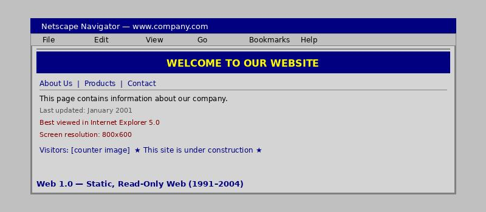

What is Web 1.0?

Web 1.0 refers to the first stage of the World Wide Web, roughly from 1991 to 2004. It was characterized by static, read-only web pages with little user interaction.
Websites during this era were like digital brochures - information flowed one way from the website owner to the visitor.
Key features:
- Static pages (content didn't change unless the webmaster updated files)
- No comments, likes, or user-generated content
- Websites used HTML frames and tables for layout
- Limited multimedia (basic images and GIFs)
- Examples: early Yahoo!, personal home pages, GeoCities